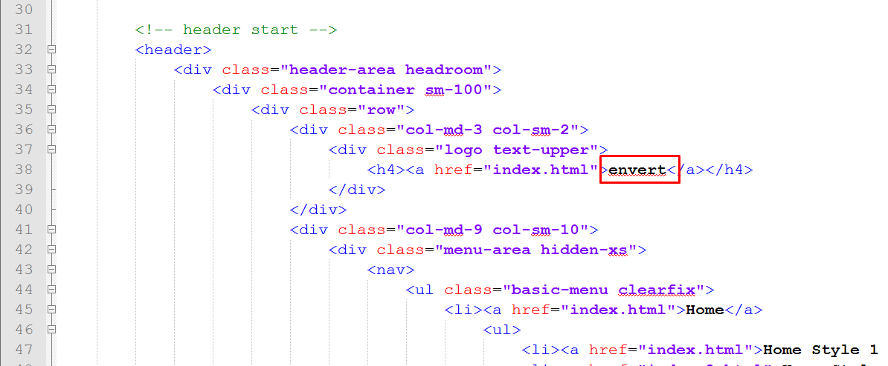
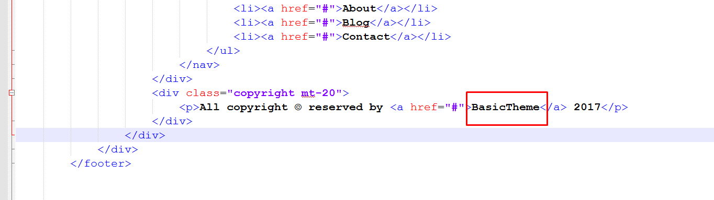

Thank you for purchasing my template. If you have any questions that are beyond the scope of this help file, please feel free to open a new ticket at our support forum
<!-- Dubai Font (It Is Arabic Font) -->
@font-face {
font-family: "Arabic Dubai";
src: url("../fonts/dubai_fonts/DubaiW23-Regular.eot") format("eot");
src: url("../fonts/dubai_fonts/DubaiW23-Regular.ttf") format("ttf");
src: url("../fonts/dubai_fonts/DubaiW23-Regular.woff") format("woff");
src: url("../fonts/dubai_fonts/DubaiW23-Regular.woff2") format("woff2");
font-weight: normal;
font-style: normal;
}
@font-face {
font-family: "Arabic Dubai";
src: url("../fonts/dubai_fonts/DubaiW23-Medium.eot") format("eot");
src: url("../fonts/dubai_fonts/DubaiW23-Medium.ttf") format("ttf");
src: url("../fonts/dubai_fonts/DubaiW23-Medium.woff") format("woff");
src: url("../fonts/dubai_fonts/DubaiW23-Medium.woff2") format("woff2");
font-weight: 600;
font-style: normal;
}
@font-face {
font-family: "Arabic Dubai";
src: url("../fonts/dubai_fonts/DubaiW23-Bold.eot") format("eot");
src: url("../fonts/dubai_fonts/DubaiW23-Bold.ttf") format("ttf");
src: url("../fonts/dubai_fonts/DubaiW23-Bold.woff") format("woff");
src: url("../fonts/dubai_fonts/DubaiW23-Bold.woff2") format("woff2");
font-weight: bold;
font-style: normal;
}
@font-face {
font-family: "Arabic Dubai";
src: url("../fonts/dubai_fonts/DubaiW23-Light.eot") format("eot");
src: url("../fonts/dubai_fonts/DubaiW23-Light.ttf") format("ttf");
src: url("../fonts/dubai_fonts/DubaiW23-Light.woff") format("woff");
src: url("../fonts/dubai_fonts/DubaiW23-Light.woff2") format("woff2");
font-weight: 500;
font-style: italic;
}
<!-- All CSS Files Here --> <!-- Project Shortcut Icon --> <link rel="shortcut icon" href="assets/img/logo.svg" type="image/x-icon"> <link rel="icon" href="assets/img/logo.svg" type="image/x-icon"> <!-- Bootstrap V 4.1.3 --> <link rel="stylesheet" href="assets/css/bootstrap.css"> <link rel="stylesheet" href="https://cdn.rtlcss.com/bootstrap/v4.1.3/css/bootstrap.min.css" crossorigin="anonymous"> <!-- FontAwesome 5 --> <link rel="stylesheet" href="assets/css/fontawesome.css"> <!-- Icomoon Library --> <!-- Convert Images Svg To Icons Website (https://icomoon.io/) --> <link rel="stylesheet" href="assets/css/icomoon.css"> <!-- Owl Carousel Slider --> <!-- (Refrence) https://owlcarousel2.github.io/OwlCarousel2 --> <link rel="stylesheet" href="assets/css/owl.carousel.min.css"> <link rel="stylesheet" href="assets/css/owl.theme.default.min.css"> <!-- Main Style --> <link rel="stylesheet" href="assets/css/style.css">
<!-- All js plugins here --> <script src="assets/js/jquery.min.js"></script> <-- Popper Js --> <script src="https://cdnjs.cloudflare.com/ajax/libs/popper.js/1.14.3/umd/popper.min.js" integrity="sha384-ZMP7rVo3mIykV+2+9J3UJ46jBk0WLaUAdn689aCwoqbBJiSnjAK/l8WvCWPIPm49" crossorigin="anonymous"></script> <-- Bootstrap V 4.3.1 --> <script src="assets/js/bootstrap.min.js"></script> <-- Owl Carousel Slider --> <-- (Refrence) https://owlcarousel2.github.io/OwlCarousel2 --> <script src="assets/js/owl.carousel.min.js"></script> <-- Main Functions --> <script src="assets/js/functions.js"></script>

